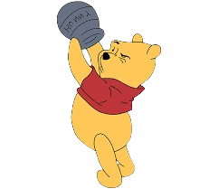
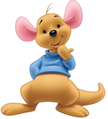
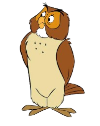
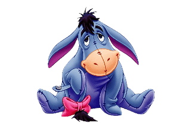
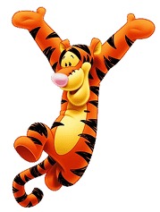
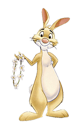
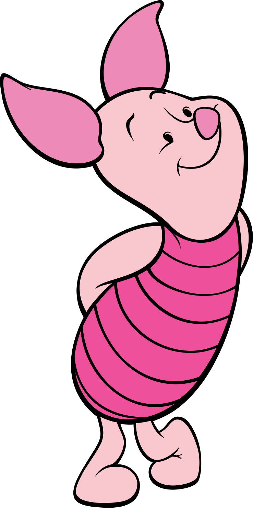

Pooh é um ursinho amarelo e fofimho, com a sua camisa vermelha, sendo o protagonista do Bosque dos cem acres, conhecido por sua natureza amável, gentil e por vezes distraída.Ele tem uma paixão incontrolada por mel que muitas das vezes o coloca em enrroscadas. Gosta muito de esta com seus amigos vivendo aventuras dia apos dia.

Ele é um Canguru filhote que se mudou para o Bosque dos cem Acres recentemente. Ele mora com sua mãe, Can, e seu melhor amigo é o Tigrão, com quem ele gosta muito de pular pelo Bosque. Guru tem a personalidade de uma criança pequena, assim como Tigrão ele tem muita energia e adora brincar.

Ele é uma Coruja macho que vive no Bosque dos cem Acres. É o habitante mais velho do Bosque e também o mais sábio, sempre dando conselhos, ensinando e contando histórias de sua vida para os outros personagens, que gostam de ouvi-lo falar. Corujão também é o único habitante do Bosque que sabe ler.

O Bisonho, também conhecido como Ió, é um burrinho. Ele é conhecido por seu humor pessimista e sua tendência a ser melancólico. O Bisonho mora no sul do Bosque dos Cem Acres, numa área designada para ele, e sua casa de graveto.

Tigrão é um tigre cheio de energia que adora pular com sua cauda pelo Bosque dos cem Acres o dia inteiro. Tigrão é muito ativo e costuma ter muitas ideias (algumas não tão boas) para se divertir, e vive pulando emcima dos seus amigos.

Abel é um coelho amarelo que gosta muito de jardinagem, sua maior paixão na vida é a sua horta. Quando não está saindo meio contra sua vontade, está oferecendo mel para o pooh, ele não gosta tanto de aventuras com os outros habitantes do Bosque, Abel prefere a paz da floresta e de sua plantação de cenouras.
